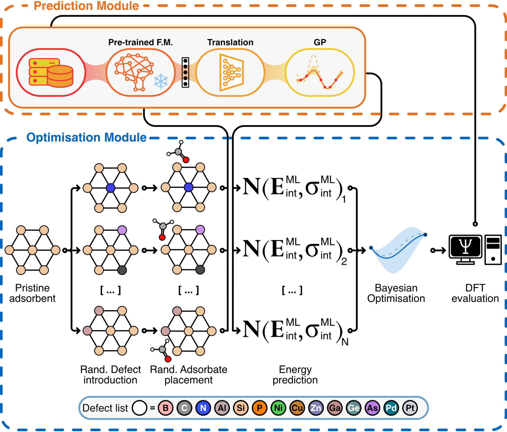
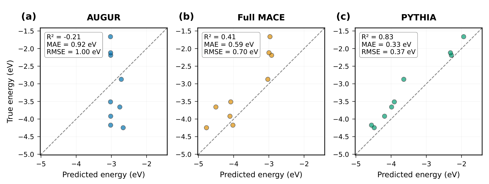
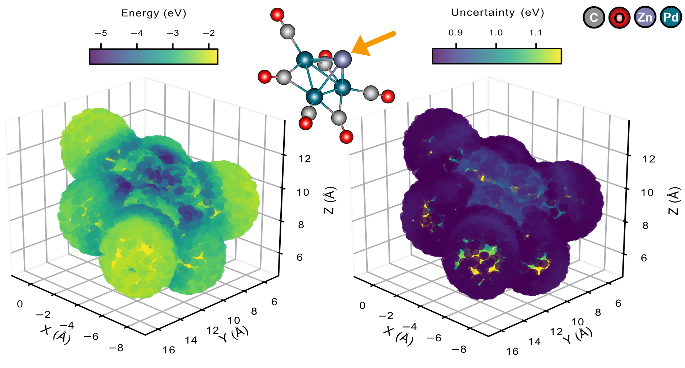
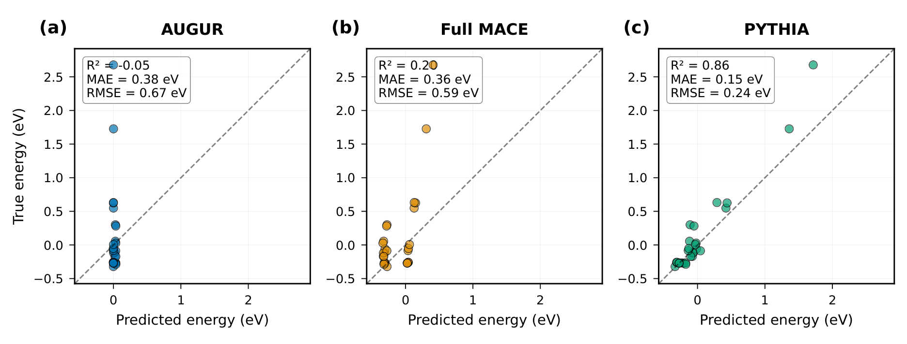
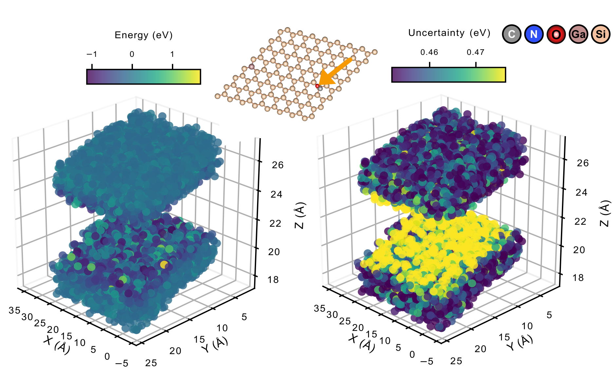

PYTHIA：冻结基础模型，用少量新计算联合寻找掺杂方案与吸附构型
论文原文 ↗原文：Ioannis Kouroudis、Zhaosu Gu、Poonam、Leon Müller、Alessio Gagliardi，PYTHIA, a transferable machine learning framework for simultaneous defect and adsorption site optimization，arXiv:2610.31539，2026。官方页面 · 论文 PDF
想让一个分子更稳定地吸附在材料上，往往要同时回答两个问题：材料中哪些原子应该被替换，以及分子应该放在哪里、以什么方向靠近表面。掺杂改变局部化学环境，局部环境又改变最佳吸附构型，两者天然耦合。
对新材料逐一做密度泛函理论（DFT）计算，代价很高；直接训练复杂模型，又需要先积累足够多的计算数据。PYTHIA 的切入点是：保留基础原子模型已经学到的结构知识，只用一个较小的转换层适配新体系，再用高斯过程给出能量和不确定性，以此决定下一步算什么。
作者在两个不同体系中联合优化取代缺陷和吸附构型：Zn 在掺杂金属羰基团簇上的吸附，以及甲醛在掺杂硅烯上的吸附。工作的重心是以较少的新体系数据，把复杂模型的表达能力接到可持续迭代的结构搜索上。
一、方法怎样做：把预训练结构表示转成当前任务的能量预测

图1｜联合优化怎样形成闭环（原文 Figure 1）。上方以冻结基础模型提取表示，经 Transformer 转换后由 GP 预测能量与不确定性；下方生成掺杂及吸附构型，选择候选交给 DFT，再把计算结果用于更新模型。
1. 输入整个“材料—吸附物”构型，从基础模型中提取结构信息
输入包含原子种类与空间位置，因此既描述基底的组成和缺陷，也描述吸附物所在位置和取向。第一层采用预训练 MACE。MACE 是利用原子环境和多体几何关系学习能量相关信息的图神经网络；它在已有大量原子结构数据上训练，内部表示已经包含许多局部化学环境的特征。
PYTHIA 将 MACE 参数固定，用它作为结构信息提取器。作者从其较深的中间层取出表示，保留比最终特定能量输出更丰富的结构信息。新体系训练时更新的是后面的适配部分，而这套已有表示保持稳定。
这一步的目的，是让新任务继承复杂模型的表达能力，减少从新体系少量样本中重新学习所有原子关系的负担。
2. Transformer 对齐表示，GP 给出预测分布
基础模型的特征来自原来的训练任务，而当前要预测的是某种新材料与吸附物的相互作用能。作者在两者之间加入 Transformer 转换层，使提取出的特征适合当前吸附任务。
Transformer 的自注意力机制会比较输入表示中的不同部分，学习它们在当前环境中怎样相关，再将相关信息组合为新表示。这里可以把它理解成一个可训练的“特征翻译器”：基础模型提供已有结构知识，转换层用当前数据调整怎样使用这些知识。
转换后的向量进入 高斯过程回归（GP）。GP 是一种给函数建立概率模型的方法：通过核函数衡量不同输入之间的相似性，再结合已知结构与能量，推断新结构的能量分布。输出包含两个量：预测平均能量，以及标准差表示的不确定性。这样，一个候选不仅得到“可能吸附多强”的估计，也得到模型对该估计有多确定的信息。
整个代理模型由此分工清楚：**冻结 MACE 提供已有结构表示，Transformer 适配当前任务，GP 负责最终能量预测与不确定性。**当前体系的数据用于训练转换层与 GP，预测结果再进入下一步搜索。
3. 缺陷、位置和取向一起生成，物理约束先筛掉不合理候选
作者不是先固定一种掺杂材料，再单独找吸附位点，而是生成成批的联合候选。一次候选生成先随机选择被替换的基底原子及允许的元素，得到一个取代缺陷构型；再选择可能发生吸附的基底原子和吸附物上的参考原子，把后者放到前者周围、由合理相互作用距离规定的球面上。
若吸附物是多原子分子，还要随机旋转，以探索不同朝向。随后做几何筛选：检查分子是否进入或穿过基底，以及是否有原子距离过近。对团簇的内外判断使用 Delaunay 几何剖分及其外包络；通过这些筛选的结构，才进入模型评价。
每批生成 10,000 个有效候选，同时变化组成、掺杂位置、吸附位置和取向。预先限定允许的掺杂元素和相互作用距离，使搜索能够在可接受的结构空间中进行。
4. 贝叶斯优化决定把昂贵计算花在哪里
**贝叶斯优化（BO）**利用代理模型的能量和不确定性选择新计算。早期侧重探索，优先选择预测不确定性高的候选，补充与已知样本相差较大的组成或位点；模型逐渐掌握搜索空间后，再向预测能量更低的候选倾斜。每次新 DFT 结果回到训练集，模型更新后开始下一轮。
这里的决策同时跨越两个变量空间：选择哪种缺陷材料，以及该材料上哪个吸附构型。除了最优点，训练后的模型还可快速扫描大量位置，生成能量分布与对应的不确定性图，帮助理解不同局部区域。
二、第一项验证：Zn 在 Chini 型金属羰基团簇上吸附
Chini 团簇由三角形 Pt 原子层和 CO 配体组成，可堆叠成不同层数。它们可以在 ZIF-8 形成过程中被包入框架，而框架中的 Zn 节点会与团簇相互作用，因此 Zn 吸附是一个有化学背景的优化目标。
作者研究一层或两层团簇，允许 Pt 被同族的 Ni、Pd 取代，最多可替换全部 Pt。每个候选因此由“哪些位置换成哪种金属”和“Zn 在哪里”共同定义，目标是找到更负的吸附能，即更强的结合。
对训练中未出现的缺陷构型，迁移后的模型更准确
作者比较三个模型：已有的 GNN—GP 方法 AUGUR、用当前数据完整训练的 MACE—GP，以及冻结基础模型后再适配的 PYTHIA。图2的测试点对应训练中没有出现的缺陷构型，用来观察模型能否把已有知识用于新的金属组合与排列。

图2｜新缺陷构型的能量能否排对（原文 Figure 2）。横轴是预测能量，纵轴是参考能量；虚线表示完全一致。PYTHIA 的点最接近对角线。
| 方法 | 平均绝对误差 MAE | 均方根误差 RMSE | 决定系数 R² |
|---|---|---|---|
| AUGUR | 0.92 eV | 1.00 eV | −0.21 |
| 完整训练 MACE—GP | 0.59 eV | 0.70 eV | 0.41 |
| PYTHIA | 0.33 eV | 0.37 eV | 0.83 |
MAE 描述单个能量预测平均偏离多少，R² 衡量模型能否解释参考能量的变化。完整训练 MACE 已优于较简单的 AUGUR，PYTHIA 又将 MAE 从 0.59 降到 0.33 eV。这个比较对应作者的方法判断：在当前有限数据下，复用已经学到的复杂表示，再适配任务，比直接用同一批新数据训练整个复杂模型更有效。
从已知最佳 −4.74 eV，找到 Pd₃ 团簇上的更低能候选
PYTHIA 在一次优化运行中识别出 Pd₃ 羰基团簇顶部或对称底部的优选 Zn 吸附位置，预测最低吸附能接近 −6.1 eV。起始数据的最佳能量为 −4.74 eV，且没有包含 Pd₃ 体系。因此，搜索既改变了金属组成，也找到了相应组成上的合适位置。

图3｜对同一种候选组成，继续观察周围位点（原文 Figure 3）。左侧按预测能量着色，右侧给出 GP 不确定性；中间是 Pd₃ 羰基团簇与 Zn，箭头标出吸附位置。
图3的意义，是把“发现一个低能点”扩展为整片候选位置的比较：哪些区域更有利于 Zn 结合，以及预测标准差如何随位置变化，都可以由同一套代理模型给出。能量与不确定性各自保留，搜索时便可按当前需要选择继续探索还是集中优化。
三、第二项验证：在硅烯上同时改变掺杂与甲醛的位置、朝向
硅烯是由硅组成、具有低幅翘曲的二维蜂窝结构，局部化学环境容易受掺杂影响。甲醛 CH₂O 又有多个原子，平移相同距离但改变分子朝向，也会改变与基底的接触方式。因此，第二个体系把搜索从单原子吸附扩展到周期基底上的分子吸附。
作者允许多类取代元素：C、Ge 等同价元素，N、P、As 等施主型元素，B、Al、Ga、In 等受主型元素，以及过渡金属。案例中每个基底最多放入三个取代缺陷，使多缺陷组合与分子位置、旋转共同变化。

图4｜更复杂的周期材料与多原子吸附（原文 Figure 4）。AUGUR 的预测集中在窄范围；完整训练 MACE 捕获部分变化；PYTHIA 更接近参考能量的对角线。
该体系中，PYTHIA 的 MAE 为 0.15 eV、RMSE 为 0.24 eV、R² 为 0.86。完整训练 MACE—GP 分别为 0.36 eV、0.59 eV 和 0.20；AUGUR 为 0.38 eV、0.67 eV 和 −0.05。随着组成和构型自由度增加，保留基础模型表示、再学习任务转换的收益更加明显。
将模型用于联合优化后，论文报告在两轮优化后找到与 Ga 掺杂相关的甲醛吸附构型，能量达到 −1.12 eV，而原始数据中最佳相互作用能为 −0.332 eV。这项结果把预测性能与实际搜索目标接起来：模型不仅拟合已有构型，还引导搜索进入比初始样本更有利的组合。

图5｜联合搜索后得到的候选能量空间（原文 Figure 5）。中间是掺杂硅烯与甲醛，左、右分别按预测能量和不确定性着色。每个点的位置由甲醛中的碳原子坐标表示。
与 Zn 单原子情况不同，这张图把甲醛的碳位置用作显示坐标，而模型输入仍包含整个分子的朝向。同一个显示位置可以对应不同旋转及不同能量，所以能量图更散、更不连续。搜索实际比较的是完整原子构型，因而能够把分子旋转和缺陷化学一起纳入候选评价。
四、这项工作的新增能力在哪里
PYTHIA 把三个能力串起来：用大型预训练原子模型提供结构表示，用小规模任务适配连接新体系的能量，用概率模型指导接下来的计算。它针对的是一种常见情形：材料较新、计算昂贵，但可以从相近原子体系已有的训练知识出发。
两个案例分别对应有限团簇中的单原子吸附，以及周期二维材料中的多原子分子吸附。相同框架在两类体系中都改善了能量预测，并把缺陷选择与吸附构型选择放入同一次优化。Chini 体系中未见缺陷构型的测试，以及两项搜索中超过初始最佳样本的候选，支撑了摘要强调的迁移和数据利用价值。
对催化、气体吸附与表面功能化研究，值得记住的方法是：已有基础模型的作用可以从直接输出性质，延伸为提供可迁移的内部结构表示；将这种表示适配到目标任务，再补上不确定性，就能把模型变成选择计算的工具。
原始摘要完整中文翻译
机器学习已经广泛进入材料优化，并产生了很高的价值。然而，它对大量样本的依赖，将其适用范围限制在已经得到较充分探索的材料家族。在本文中，我们通过 PYTHIA（Probabilistic Yet Transferable Hierarchical Interaction Architecture，具有概率性和迁移能力的分层相互作用架构）框架，将机器学习的应用拓展到新颖且研究不足的材料。
PYTHIA 利用了机器学习中两个强大的概念：基础模型和迁移学习。我们采用一个复杂的基础模型，该模型在大量化学上相似的分子数据上训练，其预训练目标与我们的预测目标在物理上相近。随后，我们冻结模型权重，利用 Transformer 层进行子空间对齐，并通过高斯过程加入不确定性量化。这两个层可以在有限数据集上训练，同时使我们能够利用已经获得的知识、已有材料研究及复杂模型架构。
得到的模型作为贝叶斯优化方案的代理模型。为展示框架的稳健性，我们将其应用于两个不同体系的吸附与缺陷优化研究。我们不仅能够正确且高效地识别最佳吸附位点，包括复杂吸附物的位点，而且该算法对于训练集中没有出现的体系也表现出很高的准确性。